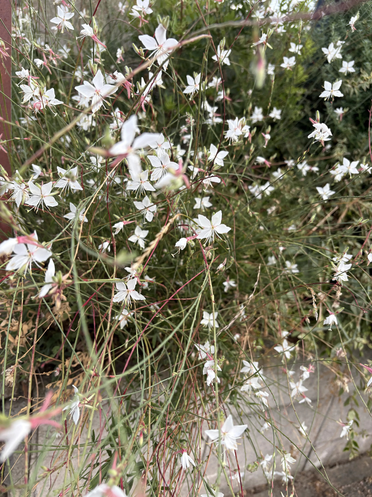
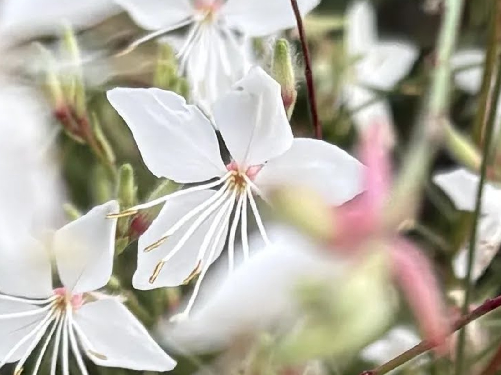
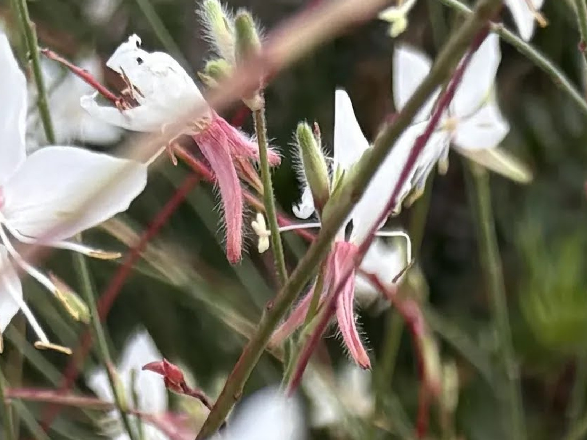

地図を読み込んでいるよ…
🔍 写真も地図も、押しているあいだ拡大して見られるよ（スマホは指を置いてすこし待ってね）。
🌍 の地図＝この子がもともと自生している場所を緑に。北アメリカ（アメリカ合衆国のテキサス州・ルイジアナ州）原産。日本へは明治時代に渡来し、観賞用に栽培されている。
⭐アメリカ合衆国だけを塗ったよ＝三河の植物観察は「帰化種 北アメリカ（テキサス州、ルイジアナ州）原産」、英語版Wikipediaも「native to southern Louisiana and Texas」と書いている。⚠⚠だからこの緑は、ほんとうよりずっと広い＝この地図はアメリカを州までは塗り分けられないので、国ぜんたいが緑になってしまう＝⭐ほんとうのふるさとは、メキシコ湾に面したテキサスとルイジアナのあたりだけだと思って見てね（⭐107 ワルナスビのときと、まったく同じ事情だよ）。⭐⭐⭐種小名の lindheimeri は、そのテキサスで40年以上も植物を集めつづけたフェルディナント・リンドハイマーにちなむ＝⭐「テキサス植物学の父」と呼ばれた人＝⚠つまり、この緑と、この子の名前は、同じ場所を指しているんだ。⭐日本は塗っていない＝⚠日本へは明治時代に渡来した観賞用の草花＝庭や花壇で育てられている子だよ。⭐⭐同じマツヨイグサ属の仲間とくらべてみて＝081 メマツヨイグサも172 アカバナユウゲショウも、やっぱりアメリカ大陸から来た子＝⭐マツヨイグサ属は、まるごと新大陸の属なんだね。
⚠ 地図は国（日本と中国だけ県・省）までしか塗れないから、ほんとうの分布より広く見えていることがあるよ。地図はだいたいの場所。正確なところは、上の文を見てね。
ハクチョウソウ（白蝶草）
Oenothera lindheimeri (Engelm. & A.Gray) W.L.Wagner & Hoch（⚠旧 Gaura lindheimeri）
別名 ガウラ／ヤマモモソウ（山桃草）／英名 Lindheimer's beeblossom・white gaura・Indian feather
アカバナ科 · Onagraceae（マツヨイグサ属 Oenothera）── ⭐図鑑で4人目のアカバナ科（081 メマツヨイグサ・116 フクシア・172 アカバナユウゲショウ）／⚠科は増えないので110科のまま／⭐⭐⭐マツヨイグサ属としては3人目＝081・172と同じ属だよ
燻太さんの言葉「白い花弁が蝶々のように見えるお花だね。花弁が四枚、アカバナ科の仲間かな? 淡いピンク色の部分は萼かな? 細い茎も繊細そう。」── ⭐⭐⭐3つとも当たっていた
⭐⭐⭐⭐⭐ 燻太さんの見立て、3つとも当たっていた
- ⭐⭐⭐①「アカバナ科の仲間かな?」→ 当たり。──⭐⭐しかも、その答えは081 メマツヨイグサのページに、ぼくがもう書いていたんだ＝「アカバナ科は4数性（花弁4・萼片4・雄しべ8・柱頭が十字に4裂）」。⭐写真を拡大したら、その4つがぜんぶ写っていたよ。
- ⭐⭐⭐②「淡いピンク色の部分は萼かな?」→ これも当たり。──写真③を見てね。細長いピンクの帯が4本、白い花弁の下から後ろへぐいっと反り返っている。表面には毛も生えている。⭐⭐これも081に書いてあったこと＝「萼片が下方に反り返る」＝⭐同じアカバナ科の形が、色ちがいで出ているんだね。
- ⭐⭐おまけに081には、こうも書いてあった＝「オオマツヨイグサの旧学名 erythrosepala は『赤い萼』の意味」。──⭐⭐アカバナ科では、萼の色が名前になるくらい大事な特徴なんだ。⭐この子の萼がきれいなピンクなのも、そういう仲間だから。
- ⭐③「細い茎も繊細そう」→ 見た目は、ね。──⚠でもこの子はテキサスとルイジアナの原産で、乾燥にも暑さにも強い。⭐⭐見た目のたよりなさと、育ちの丈夫さが、ぜんぜん一致していない子だよ。
⭐⭐⭐⭐ なぜ「蝶」に見えるのか
- ⭐⭐⭐答えは、花弁の並びかたにあるんだ。──⭐⭐三河はこう書いている＝「花弁は長さ10〜15㎜、4個、上側に1列に並び、白色」。⚠ふつうの花のように4枚がぐるりと放射状に並ぶのではなく、4枚とも上がわに寄っている。
- ⭐⭐⭐そして雄しべ8本と雌しべ1本は、下がわへ弓なりに垂れる。──上に白い羽、下に細い脚。⭐⭐だから「蝶が止まっている」ように見えるんだね。
- ⭐こういう「上と下で顔がちがう花」を左右相称という。──⭐⭐同じアカバナ科でも、172 アカバナユウゲショウや081 メマツヨイグサは放射状だった＝⭐同じ科・同じ属のなかで、こんなに形が変わるんだ。
- ⭐⭐雄しべは「花糸は毛状」（三河）＝糸というより、髪の毛みたいに細い。⭐葯は赤褐色。⭐雌しべは雄しべより長くて、その先の柱頭は4裂する。⏳ただし今回の写真では、4裂までは見えなかった＝⭐172には、その十字がはっきり写っているよ。
⭐⭐⭐⭐⭐ 名前が引っ越した子 ── ガウラから、マツヨイグサへ
- ⚠⚠この子の学名は、途中で変わっているんだ。──昔は Gaura lindheimeri（ヤマモモソウ属＝ガウラ属）だった。⭐いまはマツヨイグサ属 Oenothera のなかの sect. Gaura に入れられて、Oenothera lindheimeri（三河）。
- ⭐⭐⭐⭐⭐この引っ越しのおかげで、この子には図鑑の先輩が2人できた。 ──⭐081 メマツヨイグサ＝Oenothera biennis（黄色い花・空き地・夕方にひらく） ／⭐172 アカバナユウゲショウ＝Oenothera rosea（淡紅色・柱頭が十字・砂利道に群生） ／⭐この子＝Oenothera lindheimeri（白い蝶・花壇）
- ⭐⭐黄色・淡紅色・白。夕方・朝・昼。空き地・道ばた・花壇。──⭐ぜんぶちがうのに、同じ属なんだ。⚠名前が変わるまで、この3つを並べて見た人は、たぶんいなかったと思う。
- ⭐園芸店では、いまも「ガウラ」の名前で売られている。──⚠これはまちがいではなくて、むかしの属名が、節（section）の名前として残っているんだよ。
⭐⭐⭐ 名前のこと ── 「白鳥」ではなく「白い蝶」
- ⚠⚠「ハクチョウソウ」は白鳥草ではなく白蝶草。──⭐⭐燻太さんが最初に「蝶々のように見える」と言ったことが、そのまま和名になっているんだ。
- ⭐別名はヤマモモソウ（山桃草）＝むかしの属名 Gaura（ヤマモモソウ属）から。⚠でも、この名前はあまり使われないよ。
- ⭐⭐⭐種小名の lindheimeri は、フェルディナント・リンドハイマーにちなむ。──ドイツのフランクフルト生まれで、テキサスへ渡り、40年以上ものあいだ植物を集めつづけた人。⭐「テキサス植物学の父」と呼ばれていて、lindheimeri という名前のついた植物は50種以上もある。
- ⭐⭐⭐⭐⭐そして、ここがきれいにつながるんだ。──リンドハイマーは1843年から、エンゲルマンとエイサ・グレイのために標本を集めていた。⚠この子の学名の（ ）のなかを見てね＝Oenothera lindheimeri (Engelm. & A.Gray)＝⭐⭐集めた人の名前を、受け取った2人がつけた、ということなんだ。
- ⭐英名の Lindheimer's beeblossom は「リンドハイマーのミツバチの花」。⭐ほかに white gaura・Indian feather とも呼ばれるよ。
⭐⭐ この植物のこと
- ⭐高さ50〜150cm、花期5〜9月（三河）。⭐茎は短毛があり、直立して、たくさん分枝する。
- ⭐葉は無柄で、しばしば根もとでロゼットになる。茎の葉は互生。⭐葉身は披針形、長さ1〜9cm、幅1〜13mm、縁に粗い鋸歯（三河）＝⚠とても細い葉だよ。
- ⭐花の直径は2〜3cm。⭐⭐穂のように長くのびた花序に、下から順に咲きあがる＝だから、いつ見ても「咲いている花」と「つぼみ」と「終わった花」がまざっている。
- ⭐⭐そして三河は、こうも書いている＝「花弁は…白色、古くなると、ピンク色になる」。──⏳つまり、同じ株のなかに今日の白い花ときのうのピンクの花がまざっているはず。⚠今回の写真では、ピンクは萼とつぼみのものばかりで、そこまでは確かめきれなかった＝⏳宿題にしておくね。
- ⭐北アメリカのテキサス州・ルイジアナ州の原産で、日本へは明治時代に渡ってきた観賞用の草花だよ。
出典：三河の植物観察「ハクチョウソウ Oenothera lindheimeri」（花弁は長さ10〜15㎜、4個、上側に1列に並び、白色、古くなると、ピンク色になる／雄しべは長く、8個、花糸は毛状、葯は赤褐色／雌しべは1個、雄しべより長く、柱頭は4裂／茎は短毛があり、直立し、多数、分枝する／葉は無柄、しばしば基部でロゼット状になり、茎葉は互生／葉身は細かい毛があり、披針形、長さ1〜9㎝、幅1〜13㎜、縁に粗い鋸歯がある／高さ50〜150㎝／花期は5〜9月／帰化種 北アメリカ（テキサス州、ルイジアナ州）原産／日本へは明治時代に渡来／学名は以前は Gaura lindheimeri、現在は Oenothera sect. Gaura に入れられ Oenothera lindheimeri）／英名と花序の長さは英語版Wikipedia「Oenothera lindheimeri」（Lindheimer's beeblossom, white gaura, Indian feather／花序10〜80cm）／リンドハイマーについては Texas State Historical Association「Ferdinand Jacob Lindheimer: Father of Texas Botany」と英語版Wikipedia（1801年フランクフルト生まれ／1843年からエンゲルマンとエイサ・グレイのための植物採集者として働いた／40年以上にわたるテキサス初の常駐採集者／lindheimeri の名を負う植物は50種以上）。⚠「アカバナ科は4数性」「萼片が下方に反り返る」は、081 メマツヨイグサのページに書いた出典（三河）から引いたものだよ。⭐この写真にはEXIFが無かった＝⚠撮影日も場所も分からないまま登録した。